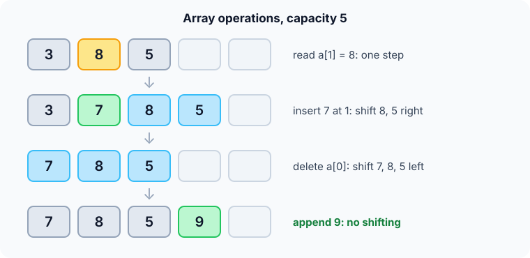

Prerequisites
- Variables and memory addresses: every byte has a number.
- A
forloop that counts down as well as up. - Big-O notation.
The analogy
Everyday analogy
Think of a row of numbered lockers. To open locker 57 you walk straight to it; you never check lockers 1 to 56 first.
But to put a new item in locker 3 while keeping everything in order, every item from locker 3 onwards must move one locker to the right. Arrays work exactly like this row of lockers.
How it works
Start with a sequence of operations by hand
The array has capacity 5 and holds [3, 8, 5]. Do each operation and guess its cost before opening "Check".
Example: predict before you read
Step 1. Read a[1]. Predict: how many elements do you look at?
Check
Just one. The address is computed directly, so you get 8 in one step.
Step 2. Cover the next line and guess: to insert 7 at index 1, which elements move, and in which order?
Check
First 5 moves from slot 2 to 3, then 8 from slot 1 to 2. Moving from the end avoids overwriting. Then 7 goes into slot 1: [3, 7, 8, 5].
Step 3. Delete a[0], then append 9. Predict the array and which step was cheaper.
Check
Deleting shifts 7, 8, 5 one slot left: [7, 8, 5]. Appending 9 just writes slot 3: [7, 8, 5, 9]. Appending was cheaper.

Quick recall: Before reading further, cover the text above and say out loud: why does inserting at index 1 shift elements starting from the end?
Check your answer
Shifting from the end moves each element into a free slot. Starting from the front would overwrite the next element before it moved.
Finish the picture: a growing array
A dynamic array (like C++ vector or Python list) starts with capacity 2 and doubles when full. Append 1, 2, 3.
- Appends 1 and 2. Predict: does anything get copied?
Check
No. Both fit in the 2 free slots: one write each.
- Append 3. Predict what happens, since the array is full.
Check
A new block of capacity 4 is allocated, 1 and 2 are copied over, then 3 is written. That one append cost 3 writes.
Quick recall: Without scrolling up, say out loud: why did the third append cost more than the first two?
Check your answer
The array was full, so a bigger block had to be allocated and both old elements copied into it before writing the new one.
The rule in plain words
To read or write index i, compute its address and go there directly.
To insert at i, shift everything from i onwards one slot right, then write. To delete at i, shift everything after it one slot left.
Quick recall: Before you read the code, write the three steps of "insert at index i" in your own words. Then check below.
Check your answer
1. Starting from the last element, move each element one slot right until you reach index i. 2. Write the new value at index i. 3. Increase the size by one.
The code
Read this code after you have done the operations by hand. It will make more sense.
int insert_at(int a[], int n, int idx, int v) { /* returns the new size */
for (int i = n; i > idx; i--)
a[i] = a[i - 1]; /* shift right, from the end */
a[idx] = v;
return n + 1;
}
int delete_at(int a[], int n, int idx) { /* returns the new size */
for (int i = idx; i < n - 1; i++)
a[i] = a[i + 1]; /* shift left */
return n - 1;
}Definition
What you just did, in one line: an array stores $n$ elements of the same size in one contiguous block, so element $i$ is found by address arithmetic.
A dynamic array also keeps spare capacity and doubles it when full.
flowchart TD
A["insert v at index i"] --> B{"Is the array full?"}
B -->|yes| C["Allocate double capacity, copy all elements"]
B -->|no| D["Shift a[i..n-1] one slot right"]
C --> D
D --> E["a[i] = v, n = n + 1"]
[3, 8, 5] with capacity 5, which path do you take? (Answer: "no", straight to the shift box.)How fast is it?
Quick recall: Before looking at the formula, predict: on an array of 1,000 elements, how many shifts does inserting at index 0 need?
Check your answer
1,000: every element moves one slot right.
Reading is fast because the address is one formula. With base address $b$ and element size $s$ bytes:
$$\text{address}(a[i]) \;=\; b + i \cdot s$$For 4-byte ints starting at address 1000, a[3] lives at $1000 + 3 \cdot 4 = 1012$. No loop is needed, whatever $i$ is.
| Operation | Cost | Why |
|---|---|---|
Read / write a[i] | $O(1)$ | One address computation |
| Search (unsorted) | $O(n)$ | May have to check every element |
| Append at the end | $O(1)$ amortized | Occasional doubling copies are spread over many appends |
| Insert at index $i$ | $O(n)$ | Shifts $n - i$ elements right |
| Delete at index $i$ | $O(n)$ | Shifts $n - i - 1$ elements left |
Warning
C arrays do not check bounds. Writing a[5] in an array of 5 elements silently overwrites other memory. Always keep the size and capacity next to the array.
Exam tip
Learn the address formula $b + i \cdot s$ and the phrase "amortized $O(1)$ append": doubling copies $1 + 2 + 4 + \dots < 2n$ elements over $n$ appends.
Common mistakes
- Shifting right starting from index
iinstead of from the end, which copies the same value over everything. - Forgetting to update the size after inserting or deleting.
- Growing a dynamic array by +1 each time instead of doubling, which makes $n$ appends cost $O(n^2)$.
Try it yourself
Exercise 1 (warm-up)
An int array (4 bytes per element) starts at address 2000. What is the address of a[10]?
Hint
Use base + index × size.
Answer
$2000 + 10 \cdot 4 = 2040$.
Exercise 2 (a bit harder)
A dynamic array starts with capacity 1 and doubles when full. How many element copies happen in total during 8 appends? Write your answer down before you open it.
Show answer
Copies happen when growing from 1→2, 2→4 and 4→8: $1 + 2 + 4 = 7$ copies. That's fewer than 8 appends, which is why append is amortized $O(1)$.
Did you know?
Did you know?
Arrays are fast in practice for a second reason: CPU caches load memory in chunks of 64 bytes, so reading a[0] also brings a[1] to a[15] into cache for free.
That's why it's worth understanding: an $O(n)$ scan of an array often beats an "equal" $O(n)$ walk through a linked list by a factor of 10 or more.
Key points to remember
If you remember one thing from each line, remember the because.
- Access is $O(1)$ because the address of
a[i]is computed as $b + i \cdot s$. - Insert and delete in the middle are $O(n)$ because every later element has to shift by one slot.
- Appending is amortized $O(1)$ because doubling makes the rare big copies add up to less than $2n$.
- Shifting right must start from the end because otherwise you overwrite elements before moving them.
- Arrays are cache-friendly because their elements sit next to each other in memory.
Self-check questions
Answer these in order, out loud. They follow the page, so your answers become the script of your video.
- How is an array like a row of numbered lockers?
Sample answer
You can walk straight to any locker number, but putting something new in the middle means moving everything after it one locker along.
- Walk through inserting 7 at index 1 in [3, 8, 5].
Sample answer
Move 5 from slot 2 to 3, then 8 from slot 1 to 2, then write 7 into slot 1: [3, 7, 8, 5].
- Why does the insert loop run from
ndown toidx + 1?A good answer says what would be overwritten otherwise.
Sample answer
Moving from the end puts each element into a slot that is already free. Going upwards would overwrite
a[idx+1]witha[idx]beforea[idx+1]had moved. - So what is an array, in one sentence?
Sample answer
A contiguous block of same-sized elements where element $i$ is found directly by computing its address.
- Why is reading
a[i]$O(1)$ whatever $i$ is?A good answer gives the address formula.
Sample answer
The address is base + i × element size, a single calculation, so no other element has to be visited.
- What do read, search, append, insert and delete cost?
Sample answer
Read/write $O(1)$, search $O(n)$, append amortized $O(1)$, insert and delete in the middle $O(n)$ because of shifting.
- Why is appending to a dynamic array still $O(1)$ on average when resizing copies everything?
Sample answer
Because capacity doubles, copies happen rarely and add up to less than $2n$ over $n$ appends, so each append costs a constant on average.
- If you had to teach this to a friend in 2 minutes, what would you leave out, and why?
Sample answer
I'd leave out the cache details and the amortized proof. I'd keep the locker analogy, the insert-with-shifting example, and "$O(1)$ access, $O(n)$ insert in the middle".
External resources
- GeeksforGeeks: Introduction to arrays: basics, memory layout and operations.
- Wikipedia: Array (data structure): addressing formulas and multidimensional arrays.
- Wikipedia: Dynamic array: growth factors and amortized analysis.
Videos
- YouTube search: dynamic array amortized analysis: why append is $O(1)$ on average.